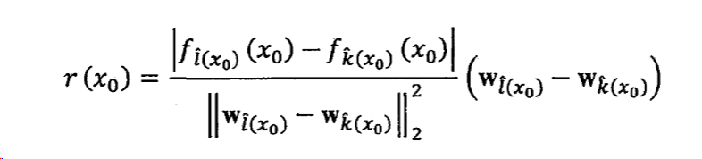
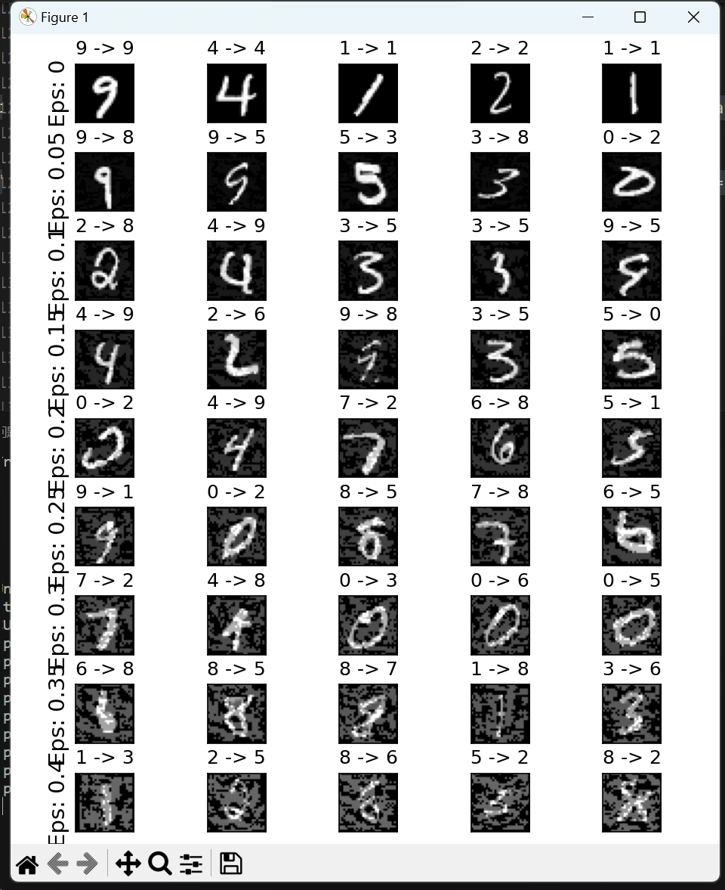

2023-1-A Review of Adversarial Attacks in Computer Vision
A Review of Adversarial Attacks in Computer Vision
综述一般都比较长，打算分几次来写，这部分打算写白盒攻击场景下的攻击方法。
这篇文章系列以A Review of Adversarial Attacks in Computer Vision为主，以其它参考文献和网上资料为辅写的内容，这里是第一部分。
1 介绍
深度神经网络已经被广泛的使用到各种下游任务当中，尤其是在像自动驾驶这种和安全高度相关的领域，但是却一直被对抗样本所威胁。对抗样本就是人眼不可见，但是可以被DNN（深度神经网络）错误分类的一个东西。
对抗攻击可以被分为白盒攻击：攻击者知道模型参数以及梯度；黑盒攻击：攻击者只能获得模型的输入和输出。
就攻击者的目标而言，还可以将其分类为有目标和无目标攻击，有目标就是把原始输入分类成指定目标，而无目标则是把原始输入错误分类就可以。
黑盒攻击更接近实际场合，黑盒又可以分为基于查询的攻击和基于迁移的攻击，前者需要大量查询去修改扰动来制造对抗样本，后者不需要，因此基于迁移的攻击在实践中更契合。基于迁移的攻击需要在本地有一个代理白盒，它最好的情况就是和要攻击的模型一样，这样对代理白盒生成的对抗样本也可以对目标模型生效。
从对抗扰动生成的方式来看，就有基于优化的方法、基于生成的方法。基于优化的方法是使用模型的梯度来迭代更新指定样本来获得扰动，这是最常用的方式。为了提高可移植性，之后的工作将基于优化的方法和很多方法联系起来，比如假如在迭代的时候加入动量，输入的时候进行变化，替代损失函数或者建造辅助分类器。
在有目标攻击的场景中，基于优化的方法差一些，需要为每一个样本都创建扰动。生成方法可以推广到更多样本上，这将有助于创建通用对抗扰动。
三种常见的攻击场景：图像分类、物体检测和语义分割。物体检测似乎是更脆弱的，因为它不仅需要预测还需要回归。语义分割也脆弱，因为它也是一个回归问题。这是因为，回归问题不像分类问题，分类的预测结果不会发生连续变化，而是有一个阈值，但是在回归问题中，预测结果会随着输入的变化而连续变化，这使得回归问题中的模型鲁棒性较差，抵抗对抗性攻击的能力较差。回归模型通常对输入数据的微小变化更加敏感，即使是很小的扰动也可能导致模型输出发生显著变化。
2 基于优化的白盒攻击
2.1 盒约束 L-BFGS（定向）
因为对最小化扰动来使得神经网络错误分类的方程的复杂度太高，所以将其简化为一个凸优化版本。找到最小损失函数的加性项，这个加性项使神经网络错误分类。
$$
Minimize_r\quad c||r||_\infty+loss_f(x+r,y^t)\\s.t.\quad x+r\in[0,1]^m
$$
损失函数是交叉熵损失函数，表达的意思是将模型分类对抗样本到目标类$y^t$。首先固定超参数c，解决优化问题以找到当前c下的最优解，找到最优对抗扰动r。通过在c上进行线性搜索，找到满足条件的最优对抗扰动r，从而得到最终的对抗样本x + r。
2.2 C&W（重点、定向）
cw攻击使用了$L_0,L_2,L_\infty$范数来生成有限制的扰动。它是最强大的基于目标的攻击，是L-BFGS的改进版本。它把找到一个图片的对抗样本作为优化问题。
$$
minimize_\varepsilon \quad D(x,x+\delta)\\s.t.\quad C(x+\varepsilon)=t\\x+\varepsilon\in[0,1]^n
$$
目标就是找到一个a，使得D函数值最小，D就是各种范数。由于上面的函数时非线性的，所以很难优化。所以我们定义一个目标函数f，当且仅当$f(x+\varepsilon)<=0时，C(x+\varepsilon)=t$，其中f是定义的目标函数，C是模型的输出结果。
f有很多函数可选，上个式子可以改写为：
$$
minimize_\varepsilon \quad D(x,x+\varepsilon)\\s.t.\quad f(x+\varepsilon)<=0\\x+\varepsilon \in[0,1]^n
$$
其中f(x)可以是如下形式：
$$
f(x)=max(max\left{Z(x’)_i:i\not=t\right}-Z(x’)_t,-\sigma)
$$
Z(x’)是指最后一个隐藏层的输出,t是目标标签。
如此，就把约束条件改为了目标函数。再把D改为p范数，就可以把式子改写成：
$$
min\quad ||\delta||_p+cf(x+\varepsilon)\\s.t.\quad x+\varepsilon\in[0,1]
$$
3 基于梯度的白盒攻击
3.1 FGSM（非定向）
虽然生成对抗样本的方法有很多种，但最广泛采用 的方法是在输入空间沿着梯度的方向或者反方向执行梯度上升策略添加扰动。以后很多基于梯度的攻击大多都是FGSM的变体，因为梯度只计算一次，所以攻击能力是受限的。成功的前提条件是损失函数的梯度方向在局部区间内是线性的。
目标就是
$$
maxmize\quad \mathcal L(f(x’),y),\\such\quad that\quad ||x’-x||<=\epsilon
$$
最大化差距，并且生成过程为：
$$
x’=x+\epsilon·sign(\nabla_xJ(\theta;x,y))
$$
模型参数是$\theta$,sign函数里面是梯度值。sign函数的输出范围是{1,0,-1},只有这三个值。
3.2 I-FGSM/BIM（非定向）
它是FGSM的迭代形式。
$$
\widetilde x_0=x,\widetilde x_{N+1}=Clip_{x,\alpha}\left{\widetilde x_N+\alpha sign(\nabla_xJ(\theta;\widetilde x_N,y))\right}
$$
Clip就是剪裁操作，表示把其中的值限制在x的阿尔法范围内。
在很多类别的情况下，攻击成功率会变低，主要是因为可能把一种雪橇犬识别为另一种雪橇犬。所以这时候可以使得目标y为最低置信度的y，也就是要达到一个目标，攻击目标必须是最低的置信度。
那么迭代形式转变为：
$$
\widetilde x_0=x,\widetilde x_{N+1}=Clip_{x,\alpha}\left{\widetilde x_N+\alpha sign(\nabla_xJ(\theta;\widetilde x_N,y_{L}))\right}
$$
其中yL是指最不可能的类别。通常情况下这种攻击又被称为ILCM。
3.3 PGD(非定向，重要)
PGD比前两者都好，已经称为评价的基准。
PGD在I-FGSM攻击的起点中加入了随机化噪声，使得初始化更加多样化。PGD通常需要执行多次随即重启，这样就可以保证攻击成功率的最大化。
可表示为：
$$
x’_0=x+uniform(-\epsilon,\epsilon)\
x’_k=\underset{B\epsilon}{\Pi}(x+\alpha sign(\nabla_xJ(\theta; x’_k,y)))
$$
uniform函数表示初始化均匀分布，里面的值是范围。
4 其他方法的白盒攻击
4.1 DeepFool（非定向）
deepfool也是一种最小化扰动的攻击方法，从几何角度出发，来找距离分类决策超平面最近的扰动。在二分类场景下，给定分类器$f(x)=w^Tx+b$,输入x0，最小扰动对应于x0到分类边界的投影为：
$$
r(x_0)=-\frac{f(x_0)}{||w||_2^2}w
$$
其中$\frac{w}{||w||_2^2}$是法向量的单位向量，将x0沿着垂直于决策边界的法向量更新，自然可以得到最小扰动的对抗样本。
还可以扩展到多分类的情况：
4.2 UAPs（非定向）
它使用的方法和deepfool类似，也是将其推出决策边界。uaps生成一小段扰动，可以添加到不同的输入样本中，使得这些样本被错误分类。UAPs方法通过在训练数据集上进行迭代优化来生成通用的扰动。它的关键思想是找到一个扰动，能够在多个样本上产生最大的影响，使得这些样本被错误地分类。UAPs方法的优势在于生成的扰动可以适用于不同的输入样本，而不需要为每个输入样本单独生成对抗样本。
4.3 ATNS（定向/非定向，甚至黑盒）
通过最小化联合损失函数生成对抗样本，联合损失函数由两部分组成，第一部分是保持样本和原图像的相似性，第二部分是导致对抗样本误分类性。
4.4 JSMA（定向）
JSMA 方法的基本思想是使用梯度值来构造显著图，基于每个像素点对梯度的影响然后进行建模。由于梯度的变化值与决策模型对目标类别判定的概率具有正比关系，因此改变一个较大的梯度值将极大的增加决策模型将目标样本标记为预设目标类别的可能性。JSMA 方法通过显著图挑选出最重要的像素，也即梯度最大值所对应的像素点，然后对针对该像素点进行干扰，从而增加目标样本被模型分类为目标类别的可能性。原文中采用的是基于雅可比显著图的方法进行对抗样本的生成，因此，该方法也被称为基于雅可比显著图的攻击方法（Jacobian-based Saliency MapAttack），即 JSMA 方法。
相比其它攻击方法，虽然 JSMA 方法的计算效率较低，但是该方法的攻击性能却具有较强的隐蔽性。同时，通过该方法所构建的对抗样本也具有较高的成功率与较好的转移率。

5 算法实现和演示
FGSM的非定向攻击，网络模型是Lenet，使用数据集是手写数据集。
1 | |
结果如下，可以看到，随着扰动的增大，test的成功率迅速减小。

在扰动达到0.25的时候，准确率只有20%左右了。但是对于的第6列，人眼还是可以分辨的出来的。
其中用到的预训练模型和完整代码在我的仓库中。